2024 年 9 月 (バージョン 1.94)¶
アップデート 1.94.1: このアップデートはこのセキュリティ 問題 に対処します。
アップデート 1.94.2: このアップデートはこれらの 問題 に対処します。
Visual Studio Code の 2024 年 9 月リリースへようこそ。このバージョンには多くの更新が含まれており、いくつかの主要なハイライトは次のとおりです:
- エクスプローラーで検索 - 改良された検索コントロールでエクスプローラー ビュー内のファイルをすばやく見つけます。
- ソース コントロール グラフ - ソース コントロール グラフでのフィルタリング オプションとインタラクティビティの向上。
- Python テスト カバレッジ - カバレッジを使用して Python テストを実行し、エディターでリッチな結果を取得します。
- ESM - ESM への移行により、VS Code の起動が高速化されました。
- アカウントの優先設定 - 拡張機能に使用するアカウントを指定します。
- ネイティブ REPL での Copilot - ネイティブ REPL でコード補完とインライン チャットを取得します。
- 改善されたチャット コンテキスト - ファイルをドラッグ アンド ドロップするか、IntelliSense を使用して、より関連性の高いチャット コンテキストを取得します。
- テスト環境のセットアップ - ワークスペースのテスト フレームワークのセットアップを支援します。
これらのリリース ノートをオンラインで読みたい場合は、code.visualstudio.com の 更新プログラム にアクセスしてください。 Insiders: できるだけ早く新機能を試してみたいですか? ナイトリー Insiders ビルドをダウンロードして、最新の更新プログラムをすぐに試すことができます。
GitHub Copilot¶
チャットで言語モデルを切り替える¶
以前、OpenAI o1 モデルへの早期アクセスにサインアップ できることを発表しました。アクセス権を取得すると、VS Code の Copilot Chat でチャット会話に使用するモデル バージョンを選択するための Copilot Chat モデル ピッカー コントロールが表示されます。
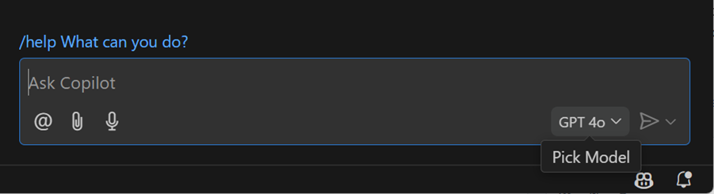
GPT-4o をインライン チャットで使用¶
Copilot インライン チャットを GPT-4o にアップグレードしました。これにより、エディターでチャットを使用する際に、より高速で正確かつ高品質なコードと説明を提供します。
チャットでの公開コードの一致¶
GitHub Copilot が GitHub.com 上の公開されているコードと一致する可能性のあるコードを返すことを許可できます。この機能が 組織向けサブスクリプション または 個人向けサブスクリプショ で有効になっている場合、Copilot コード補完は既に検出された一致の詳細を提供します。これで、Copilot Chat でもこれらの公開コードの一致を表示できるようになりました。
この機能が組織のサブスクリプションまたは個人のサブスクリプションで有効になっている場合、応答の最後に 一致を表示 リンクが表示されることがあります。リンクを選択すると、エディターが開き、一致するコード参照の詳細が表示されます。
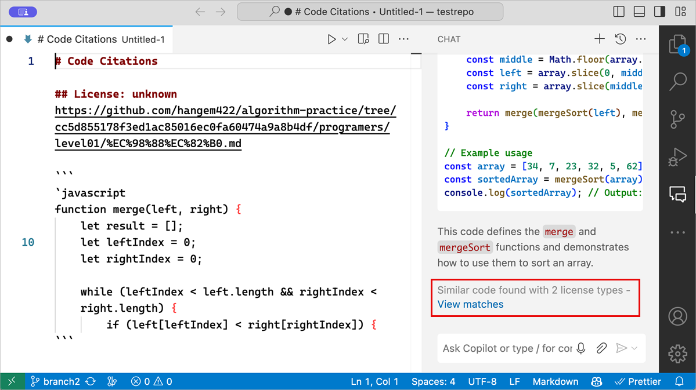
GitHub Copilot のコード参照に関する詳細情報 は GitHub ブログでご覧いただけます。
チャットでのファイル提案¶
チャット入力フィールドで #<filename> と入力すると、ファイル名の提案が表示され、プロンプトにコンテキストとしてすばやく添付できます。これは、ファイルの添付をサポートするチャットの場所 (チャット ビュー、クイック チャット、インライン チャット、ノートブック チャットなど) で機能します。
チャット応答でのファイル リンクの改善¶
Copilot 応答で言及されるワークスペース ファイル パスのレンダリングを改善しました。これらのパスは、@workspace 質問をするときに非常に一般的です。
最初に気付くのは、ワークスペース ファイルへのパスにファイル アイコンが含まれるようになったことです。これにより、チャット応答で簡単に識別できます。ファイル アイコンは、現在のファイル アイコン テーマ に基づいています。
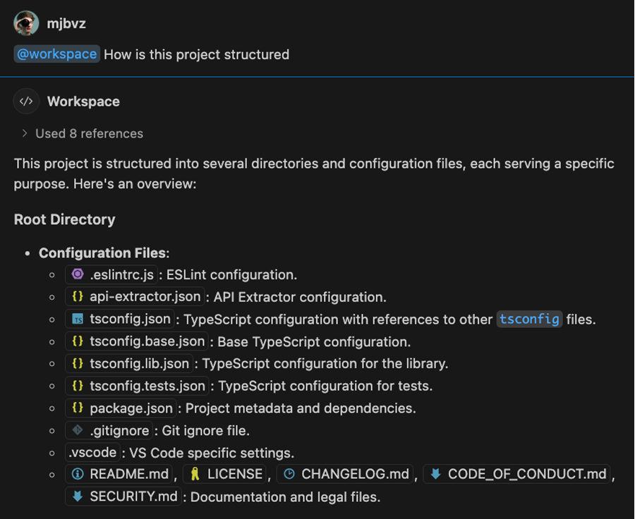
これらのパスはインタラクティブ リンクであるため、それらを選択するだけで対応するファイルが開きます。ファイルを新しいエディター グループで開くには、ドラッグ アンド ドロップを使用するか、kbstyle(Shift) を押しながらドロップしてテキスト エディターに挿入します。
デフォルトでは、これらのリンクにはファイル名のみが表示されますが、リンクにカーソルを合わせると完全なファイル パスが表示されます。
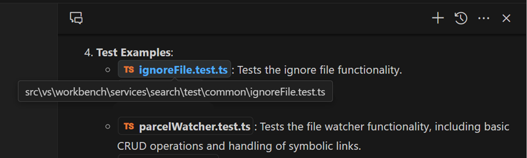
また、これらのパスの 1 つを右クリックして、リソースへの相対パスをコピーしたり、オペレーティング システムのファイル エクスプローラーでファイルを表示したりするなどの追加コマンドを含むコンテキスト メニューを開くこともできます。
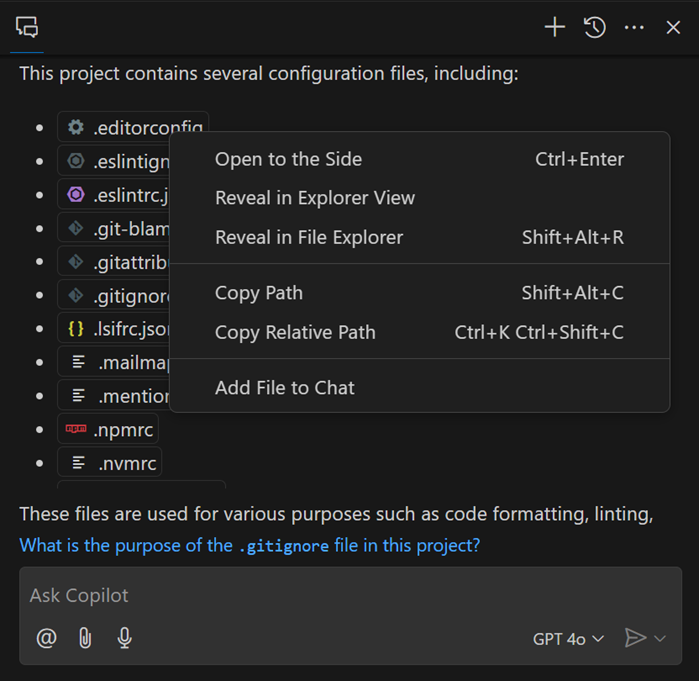
今後のイテレーションでワークスペース パスのレンダリングをさらに改善し、応答内のシンボル名にも同様の改善を行う予定です。
ファイルをドラッグ アンド ドロップしてチャット コンテキストを追加する¶
ワークベンチからファイルやエディター タブをチャットに直接ドラッグすることで、チャット プロンプトのコンテキストとして追加のファイルを簡単に添付できるようになりました。インライン キャットの場合、kbstyle(Shift) を押しながらファイルをドロップして、エディターで開くのではなくコンテキストとして追加します。
履歴に含まれるファイルの添付¶
チャット リクエストの関連コンテキストとしてファイルまたはエディター選択を添付する方法は複数あります。以前は、このコンテキストは現在のリクエストにのみ追加され、フォローオン リクエストの履歴には含まれていませんでした。現在、これらの添付ファイルは履歴に保持されているため、再添付することなく参照し続けることができます。
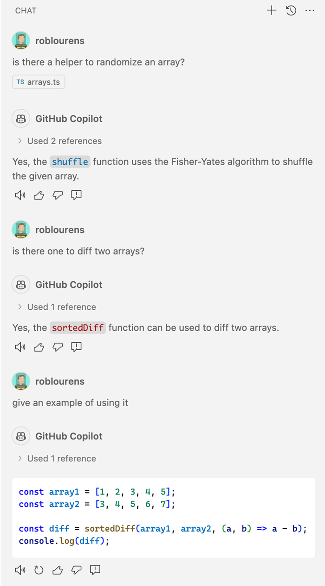
Python ネイティブ REPL でのインライン チャットと補完¶
Python 拡張機能で使用されるネイティブ REPL エディターは、入力ボックスで Copilot インライン チャットとコード補完をサポートするようになりました。
ノートブックで生成されたコードを受け入れて実行する¶
Copilot インライン チャットを使用してノートブックでコードを生成する場合、インライン チャットから生成されたコードを受け入れて直接実行できます。
ノートブック チャットで変数を添付する¶
ノートブックで Copilot を使用する場合、Jupyter カーネルから変数をリクエストに添付できるようになりました。変数を追加すると、チャット リクエストのコンテキストをより正確に制御できるため、Copilot からより関連性の高い応答を得ることができます。
# と入力し、続けて変数名を入力するか、インライン チャットで 📎 コントロール (kb(workbench.action.chat.attachContext)) を使用してコンテキスト変数を追加します。
更新されたチャット ユーザー エクスペリエンス¶
クリーンな新しいウェルカム エクスペリエンスでチャット ビューを更新し、チャット入力エリアのレイアウトを更新しました。@ ボタンを使用して、インストールした拡張機能からの組み込みのチャット参加者とスラッシュ コマンドの両方のリストを簡単に見つけることができるようになりました。チャット入力ボックスに / または @ を入力して、参加者やスラッシュ コマンドを見つけることもできます。
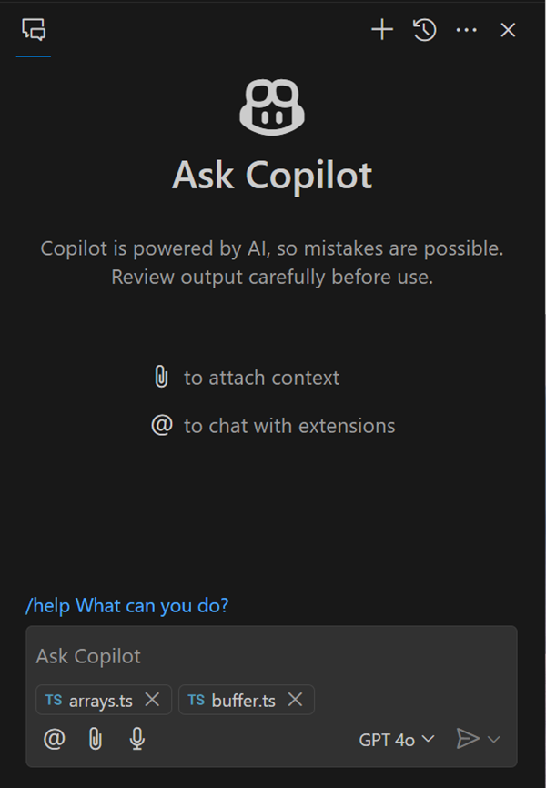
セマンティック検索結果 (プレビュー)¶
設定: setting(github.copilot.chat.search.semanticTextResults)
検索ビューを使用すると、ファイル全体で正確な検索を実行できます。Copilot を使用して、意味的に関連する検索結果を提供する機能を検索ビューに追加しました。
この機能はまだプレビュー段階であり、デフォルトでは設定が有効になっていません。ぜひ試してみて、フィードバックをお寄せください。
テストの失敗を修正する (プレビュー)¶
設定: setting(github.copilot.chat.fixTestFailure.enabled)
失敗した単体テストの診断を支援するための特別なロジックを追加しました。このロジックは、いくつかのシナリオで /fix スラッシュ コマンドによってトリガーされます。また、/fixTestFailure スラッシュ コマンドを直接呼び出すこともできます。このコマンドはデフォルトでチャットで有効になっていますが、設定 setting(github.copilot.chat.fixTestFailure.enabled) を使用して無効にすることもできます。
自動テスト セットアップ (実験的)¶
設定: setting(github.copilot.chat.experimental.setupTests.enabled)
ワークスペースのテスト セットアップを構成するのに役立つ実験的な /setupTests スラッシュ コマンドを追加しました。このコマンドは、テスト フレームワークを推奨し、それをセットアップおよび構成する手順を提供し、VS Code でテスト統合を提供する VS Code 拡張機能を提案できます。これにより、コードのテストを開始するための時間と労力を節約できます。
コードのテストを生成するために /tests コマンドを使用する場合、ワークスペースでそのような統合がまだ設定されていないように見える場合、/setupTests とテスト拡張機能を推奨できます。
チャットからデバッグを開始する (実験的)¶
設定: setting(github.copilot.chat.experimental.startDebugging.enabled)
このマイルストーンでは、実験的な /startDebugging スラッシュ コマンドの改善を行いました。このコマンドを使用すると、起動構成を簡単に見つけたり作成したりして、アプリケーションのデバッグをシームレスに開始できます。Copilot Chat で @vscode を使用すると、/startDebugging がデフォルトで使用できるようになりました。
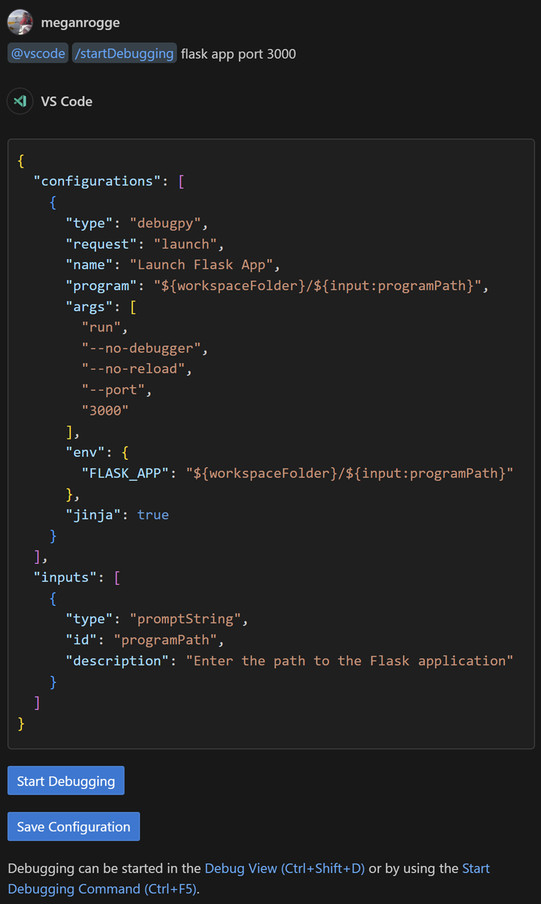
コマンド センターでのチャット (実験的)¶
設定: setting(chat.commandCenter.enabled)
コマンド センター エントリを使用してチャットにアクセスする実験を行っています。これにより、さまざまなチャット エクスペリエンスを開始したり、プロンプトにコンテキストを添付したりするなど、関連するすべてのチャット コマンドにすばやくアクセスできます。コマンド センター自体が有効になっている必要があることに注意してください。チャット コマンド センター エントリを表示します。
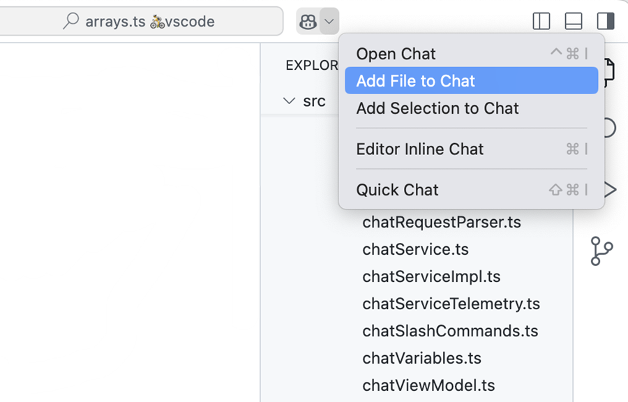
改善された時間的コンテキスト (実験的)¶
設定: setting(github.copilot.chat.experimental.temporalContext.enabled)
時間的コンテキストを使用すると、インライン チャットに最近開いたファイルや編集したファイルをチャット コンテキストの一部として考慮するように指示できます。この機能を改善しましたので、ぜひお試しください。
カスタム命令 (実験的)¶
設定: setting(github.copilot.chat.experimental.codeGeneration.useInstructionFiles)
設定: setting(github.copilot.chat.experimental.testGeneration.instructions)
前回のマイルストーンでは、カスタムコード生成命令を導入しました。この機能をさらに拡張して、ワークスペースの .github/copilot-instructions.md ファイルに**共有命令**を定義できるようにしました。これらの共通命令は、個人のコード生成命令を補完します。setting(github.copilot.chat.experimental.codeGeneration.useInstructionFiles) 設定を使用して、コード生成命令ファイルを有効にします。
さらに、**テスト生成**の命令を設定で定義したり、ファイルからインポートしたりできるようになりました。たとえば、常に特定の単体テスト フレームワークをテストに使用する場合などです。setting(github.copilot.chat.experimental.testGeneration.instructions) 設定でテスト生成命令を構成します。
アクセシビリティ¶
はじめに¶
ヘルプ メニューには アクセシビリティ機能の概要 ウォークスルーが含まれており、アクセシビリティ オプションを簡単に探索して利用できるようになりました。このウォークスルーでは、アクセシビリティ ヘルプ ダイアログ、アクセシビリティ シグナル、キーボード ショートカットなどの機能を紹介します。
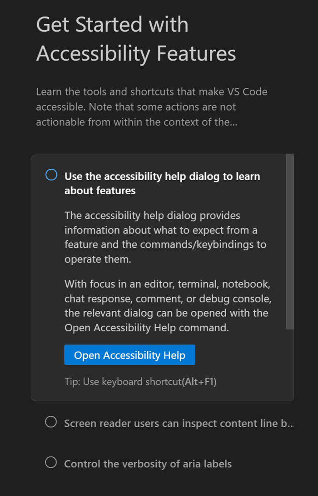
コメントのアクセシビリティの改善¶
コメント スレッド コントロールのアクセシブル ビューを導入しました。このビューには関連するエディター コンテキストが含まれており、エディターとアクセシブル ビューを切り替えることなく集中して作業を続けることができます。同様に、コメント パネルのアクセシブル ビューにもエディター コンテキストが提供されます。
また、キーボードを使用してエディターからコメント コントロールにすばやく移動できる コメント: 現在の行のコメントにフォーカス コマンドを導入しました。エディター内の次のコメント範囲と前のコメント範囲に移動するための新しいアクションもあります: コメント: 次のコメント範囲に移動 および コメント: 前のコメント範囲に移動。
ワークベンチ¶
拡張機能のアカウント優先設定を変更する¶
このイテレーションでは、拡張機能の優先アカウントを変更するエクスペリエンスを改善する方法を検討しました。たとえば、複数の GitHub アカウントを持っていて、誤って間違ったアカウントで GitHub Copilot にサインインしてしまい、別のアカウントを使用する必要がある場合などです。
事後にその優先設定を変更することが可能になりました。
- アクティビティ バーのアカウント メニュー > <Your Account> > 信頼された拡張機能の管理 > 拡張機能の歯車アイコンを選択
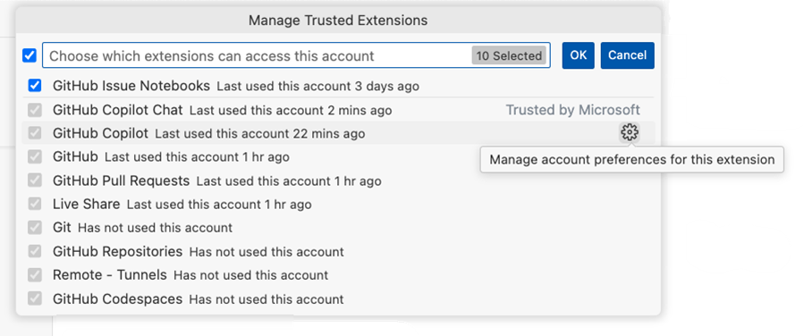
- 拡張機能 ビュー > 認証を使用する拡張機能のコンテキスト メニュー (または歯車アイコン) > アカウント優先設定 を選択
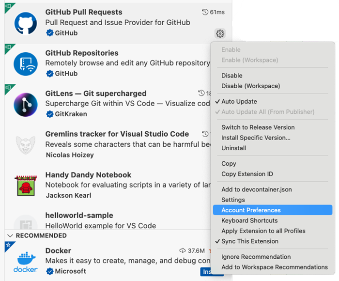
- 拡張機能の詳細ビュー > 歯車アイコン > アカウント優先設定 を選択
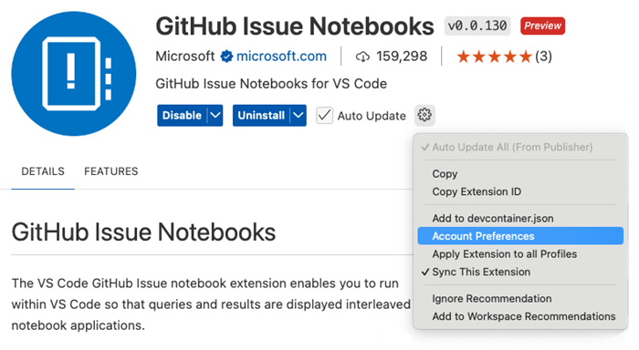
これらのオプションのいずれかを選択すると、拡張機能が使用するアカウントを変更できるクイック ピックに移動します。
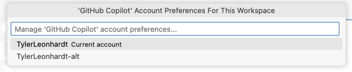
拡張機能のアカウント優先設定を変更すると、拡張機能にイベントが送信され、拡張機能が適切に処理する必要があります。期待どおりの動作が見られない場合は、その拡張機能に対して問題を報告して、アカウント優先設定エクスペリエンスを処理できるようにしてください。
このフローに関するフィードバックがあればお知らせください。
プロファイルに関連付けられたフォルダーとワークスペースを表示する¶
このマイルストーンでは、プロファイル エディターに フォルダーとワークスペース セクションを導入しました。このセクションには、特定のプロファイルに関連付けられたすべてのフォルダーとワークスペースが中央の場所に一覧表示されます。このセクションから、フォルダーを追加または変更したり、フォルダーやワークスペースを新しいウィンドウで開いたりできます。
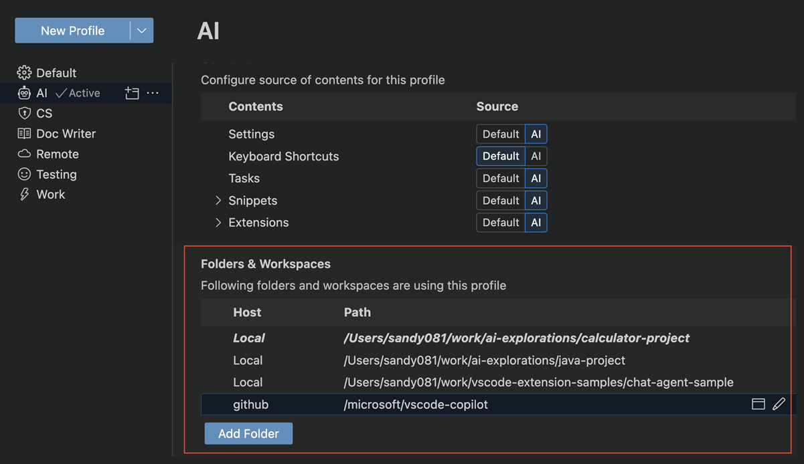
すべてのプロファイルで拡張機能を更新する¶
このマイルストーンでは、すべてのプロファイルで拡張機能を更新する機能を導入しました。複数のプロファイルがあり、拡張機能のバージョンを同期させたい場合に便利です。以前は、各プロファイルに切り替えて、そのプロファイルの拡張機能を更新する必要がありました。
拡張機能ビューの警告¶
拡張機能ビューには、無効な拡張機能やバージョンの非互換性のために無効になっている拡張機能がある場合に、警告バッジと関連情報が表示されるようになりました。
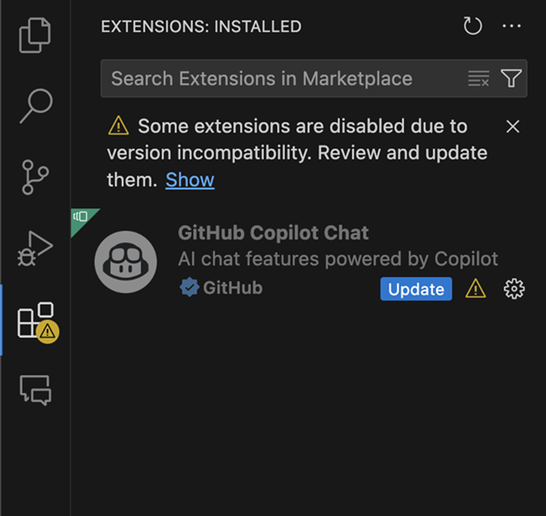
エクスプローラーで検索¶
エクスプローラー ビューの検索機能を改善し、大規模なプロジェクトでファイルを検索しやすくしました。kb(list.find) キーボード ショートカットを使用して、ファイル エクスプローラーで検索コントロールを開くことができます。検索中は、柔軟な結果を得るために、あいまい一致と連続一致を切り替えることができます。
一部のコンテキスト メニュー アクションは検索中に一時的に無効になります。今後の改善にご期待ください!
リリース ノート¶
リリース ノートで設定を参照するための簡略化された構文 (setting(setting.name)) があり、リリース ノート エディターに表示されるときにおなじみの設定ギアのレンダリングも行われます。
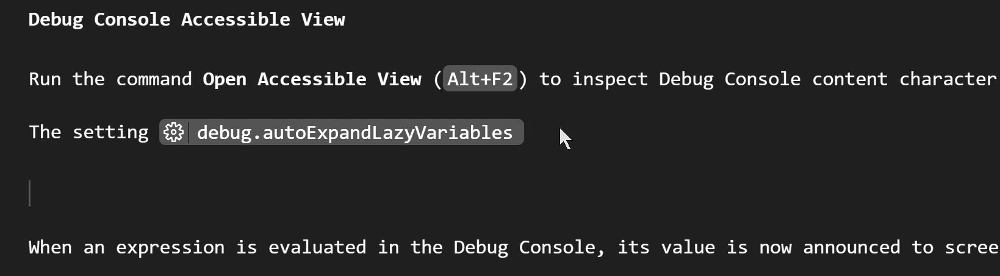
エディター¶
インレイ ヒントの改善¶
setting(editor.inlayHints.maximumLength) 設定を追加しました。この設定は、インレイ ヒントが切り捨てられる文字数を制御します。
インレイ ヒントの更新戦略も見直し、入力中にインレイ ヒントが早く更新されるようにしましたが、カーソルの水平移動は発生しません。
実験的な編集コンテキスト¶
このマイルストーンでは、新しい実験的な設定 setting(editor.experimentalEditContextEnabled) を導入しました。この設定により、VS Code の編集エクスペリエンスを強化するために EditContext API が有効になります。EditContext API の採用により、特定の IME 構成バグを修正できました。一般的に、長期的には編集エクスペリエンスが向上すると考えており、最終的にはデフォルトで有効にする予定です。
この設定を有効にした後、VS Code ウィンドウを再読み込みして、この設定を利用してください。
ソース コントロール¶
ソース コントロール グラフ ビューの改善¶
前回のマイルストーンでは、新しい ソース コントロール グラフ ビューを追加しました。このマイルストーンでは、新しく追加されたビューで利用可能な機能を拡張し、ビューのレイアウトを磨く作業を行いました。
リポジトリ ピッカー¶
複数のリポジトリを含むフォルダー/ワークスペースを開くと、ソース コントロール グラフ ビューのタイトルにリポジトリ ピッカーが表示されます。デフォルトでは、ソース コントロール グラフ ビューはステータス バーの情報に一致するアクティブなリポジトリを表示します。リポジトリ ピッカーを使用して、ソース コントロール グラフ ビューを特定のリポジトリに*ロック*できます。
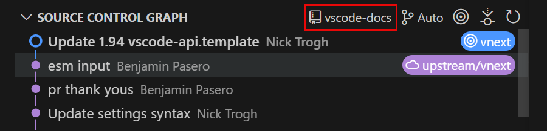
履歴アイテム参照ピッカー¶
このマイルストーンでは、ソース コントロール グラフ ビューのタイトルに新しい履歴アイテム参照ピッカーを追加しました。この参照ピッカーを使用して、グラフに表示される履歴アイテムを別のブランチにフィルタリングしたり、複数のブランチを表示したりできます。
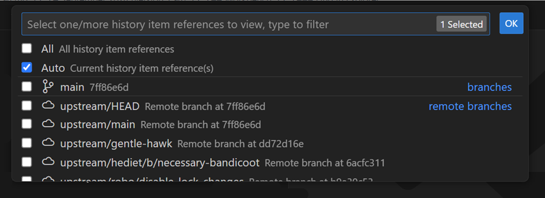
デフォルトでは、履歴アイテム参照ピッカーは Auto に設定されており、現在の履歴アイテム参照、そのリモート、およびオプションのベースのグラフがレンダリングされます。
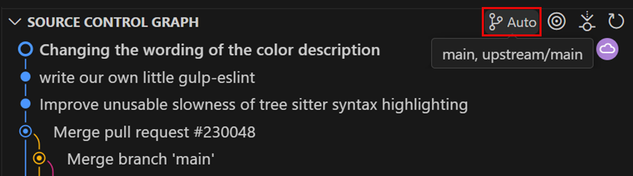
履歴アイテム アクション¶
このマイルストーンでは、ソース コントロール履歴アイテムのコンテキスト メニューで利用できるアクションのリストを拡張しました。履歴アイテムから新しいブランチ/タグを作成したり、履歴アイテムをチェリーピックしたり、アイテムをチェックアウト (デタッチ) したりするアクションを追加しました。
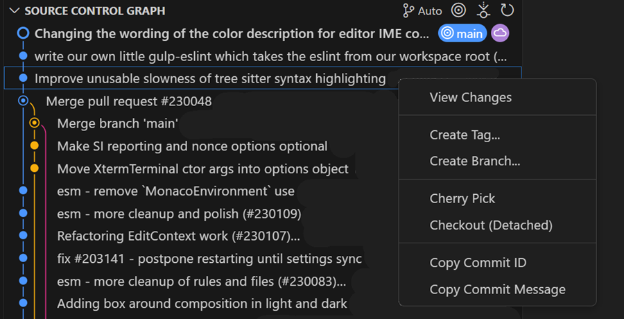
ソース コントロール グラフの設定¶
このマイルストーンでは、グラフをカスタマイズできるようにするための新しい設定セットを追加しました:
setting(scm.graph.badges)- ソース コントロール グラフ ビューに表示されるバッジを制御しますsetting(scm.graph.pageOnScroll)- ソース コントロール グラフ ビューがリストの最後までスクロールしたときに次のページのアイテムを読み込むかどうかを制御しますsetting(scm.graph.pageSize)- ソース コントロール グラフ ビューに表示されるデフォルトのアイテム数と、さらに多くのアイテムを読み込むときのアイテム数
ノートブック¶
セル間のマルチカーソル サポート (プレビュー)¶
ノートブック エディターは、setting(notebook.multiCursor.enabled:true) 設定を使用して、セル間のマルチカーソル編集をサポートするようになりました。現在、これはショートカット kbstyle(Ctrl+D) でのみトリガーされ、コア エディター アクションと限られたサブセットのエディター コマンドをサポートします。
Diff エディターはドキュメント メタデータの変更を表示します¶
ノートブックの diff エディターは、カーネル情報やセル言語など、ドキュメント メタデータに加えられた変更も表示するようになりました。
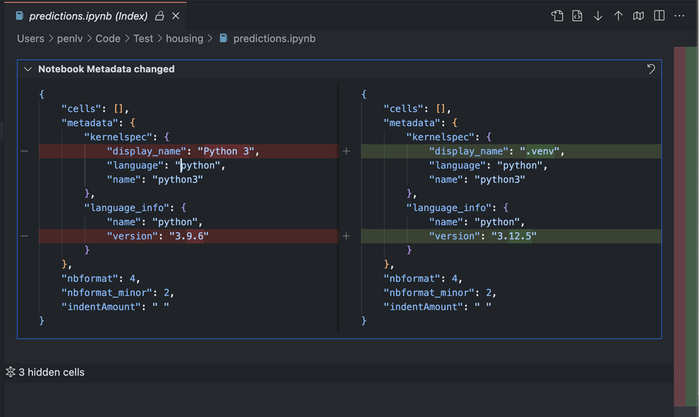
Diff ビューで変更されていない領域を折りたたむ¶
ノートブックの diff ビューは、設定 setting(diffEditor.hideUnchangedRegions.enabled) を尊重するようになりました。有効にすると、変更されていないコード ブロックはデフォルトで折りたたまれるため、大規模なノートブックの変更を確認しやすくなります。
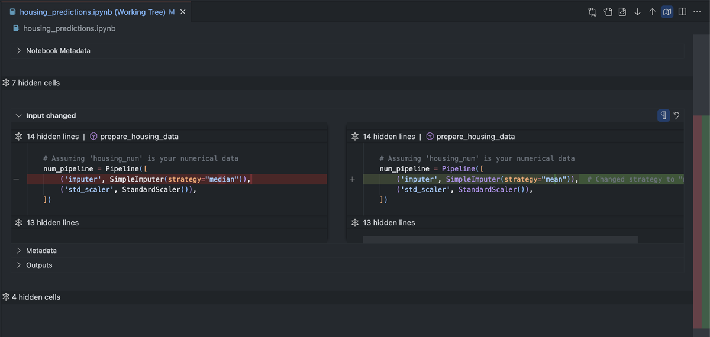
Web ワーカーでのノートブックのシリアル化 (実験的)¶
このリリースでは、ノートブックのシリアル化を Web ワーカーで実行する実験的な機能を導入しました。これにより、大規模なノートブックを操作する際に、拡張機能ホスト プロセスのメイン スレッドのブロック時間を短縮できます。デフォルトではこの機能は無効になっていますが、setting(ipynb.experimental.serialization:true) を true に設定することで有効にできます。
デバッグ¶
データのカラー化のサポート¶
VS Code は、デバッグ アダプター プロトコルからの新しいテキスト スタイリング機能をサポートしています。これにより、変数ビュー、ウォッチ ビュー、ホバー、およびデバッグ コンソール内のデータを ANSI エスケープ シーケンスを使用してカラー化できます。
JavaScript デバッガー¶
HTML 要素の表示の改善¶
JavaScript デバッガーでの HTML 要素の表示方法を改善しました。以前は、ナイーブなオブジェクトとしてレンダリングされており、ナビゲートが困難でした。現在では、DOM 構造をより正確に反映し、新しいカラー化機能を活用して基本的な構文の強調表示を提供しています。
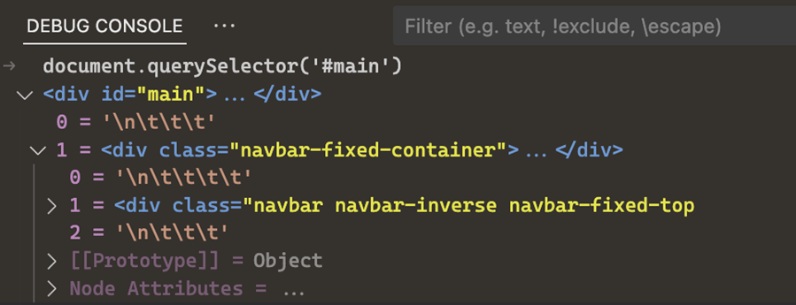
起動構成での Node コマンドの自動補完¶
launch.json ファイルには、node_modules にインストールされているコマンドライン アプリケーションの新しい自動補完ヘルパーが追加されました。これにより、vitest や nest などのツールのデバッグ設定が簡単になります。
クリーンな読み込まれたソース ビュー¶
Node.js の組み込みモジュール、評価されたスクリプト、および WebAssembly モジュールのソース パスの構造を変更して、読み込まれたソース ビューがノイズが少なく、参照しやすくしました。
言語¶
TypeScript 5.6¶
JavaScript および TypeScript のサポートは、現在 TypeScript 5.6 を使用しています。この主要なアップデートには、多くの言語およびツールの改善が含まれており、重要なバグ修正とパフォーマンスの最適化も行われています。
TypeScript 5.6 リリースの詳細については、TypeScript ブログ をご覧ください。以下のセクションでは、いくつかのツールのハイライトも紹介しています。
一部の一般的な「常に真」のプログラミング ミスの検出¶
JavaScript または TypeScript で正規表現を使用して次のようなコードを記述しているとします:
const str = '...'
if (/\d+(\.\d+)?/) {
...
} else {
...
}
おっと! 正規表現で .test() を呼び出すのを忘れているようです。これにより、if 条件は常に true と評価されます。これは望ましい結果ではありません。
この問題は指摘されると明らかですが、このようなミスは驚くほど簡単に発生し、VS Code でも実際のバグを引き起こしました! 幸いなことに、TypeScript はプログラム内の最も一般的な「常に真」のエラーのいくつかを報告するようになりました。これには、決して値にならない値に対して if 条件をテストする場合や、片側が到達不能な条件式 (たとえば /abc/ ?? /xyz/) などが含まれます。
この機能の動作の詳細と例については、TypeScript リリース ノート をご覧ください。
リージョン優先の診断¶
非常に長い JavaScript または TypeScript ファイルで作業していますか? リージョン優先の診断のおかげで、型エラーの診断が少し早く表示され始めるはずです。これにより、現在表示されているコードの診断を優先的に取得し、ファイル全体の診断がまだ計算中であっても、これらを最初に表示しようとします。
この最適化は、数千行の複雑なファイルに最も関連性があります。小さなファイルでは変更が見られない場合があります。
JavaScript および TypeScript のコミット文字の改善¶
コミット文字を使用すると、補完を自動的に受け入れることでコーディングを高速化できます。たとえば、JavaScript および TypeScript では、. はコミット文字と見なされることがよくあります。これにより、myVariable.property. を入力するには、myv、.、p、. と入力するだけで済みます。最初の . は myVariable の補完を受け入れ、2 番目の . は property の補完を受け入れます。
これらのコミット文字は現在 TypeScript によって計算されているため、プログラムの構造をより適切に考慮できます。今後もサポートを改善し続けることができます。
コミット文字はデフォルトで有効になっていますが、setting(editor.acceptSuggestionOnCommitCharacter: false) を false に設定することで無効にできます。
自動インポートの除外パターン¶
新しい autoImportSpecifierExcludeRegexes を使用すると、正規表現を使用して特定のパッケージからの自動インポートを除外できます。たとえば、lodash のサブディレクトリからの自動インポートを除外するには、次のように設定します:
{
"typescript.preferences.autoImportSpecifierExcludeRegexes": [
"^lodash/.*$"
]
}
JavaScript の場合は setting(javascript.preferences.autoImportSpecifierExcludeRegexes) を、TypeScript の場合は setting(typescript.preferences.autoImportSpecifierExcludeRegexes) を使用してこれを構成できます。詳細については、TypeScript 5.6 リリース ノート を参照してください。
リモート開発¶
リモート開発拡張機能を使用すると、Dev Container、SSH 経由のリモート マシンまたはリモート トンネル、またはWindows Subsystem for Linux (WSL) を使用して、フル機能の開発環境を使用できます。
ハイライトには次のものが含まれます:
- SSH/トンネル経由で Kubernetes コンテナーに接続する
- GPU の可用性を手動で指定する
これらの機能の詳細については、リモート開発リリース ノートをご覧ください。
拡張機能への貢献¶
Python¶
カバレッジを使用してテストを実行する¶
VS Code で Python テストをカバレッジで実行できるようになりました! カバレッジでテストを実行するには、テスト エクスプローラーでカバレッジ実行アイコンを選択するか、通常テスト実行をトリガーするメニューから「カバレッジで実行」を選択します。Python 拡張機能は、pytest を使用している場合は pytest-cov プラグインを使用して、unittest の場合は coverage.py を使用してカバレッジを実行します。
カバレッジ実行が完了すると、行レベルのカバレッジのためにエディター内の行が強調表示されます。これらは、下部の実行結果パネルで「テスト カバレッジを閉じる」または「テスト カバレッジを表示する」と表示される場所で閉じたり再度開いたりできます。さらに、テスト エクスプローラーのテスト タブの下にビーカー アイコン付きのテスト カバレッジ タブが表示され、テスト: テスト カバレッジ ビューにフォーカス でコマンド パレット (kb(workbench.action.showCommands)) で移動することもできます。このパネルでは、ワークスペース内の各ファイルおよびフォルダーの行およびブランチ カバレッジ メトリックを表示できます。
カバレッジを使用して Python テストを実行する方法の詳細については、Python ドキュメントを参照してください。テスト カバレッジの一般的な情報については、VS Code のテスト カバレッジ ドキュメントを参照してください。
Python のデフォルトの問題マッチャー¶
Python 拡張機能にはデフォルトの問題マッチャーが含まれており、Python コードの問題追跡が簡単になり、より多くのコンテキスト フィードバックが提供されます。これを統合するには、task.json のタスクに "problemMatcher": "$python" を追加します。問題マッチャーは、タスクの出力をスキャンしてエラーや警告を検出し、それらを問題パネルに表示して、開発ワークフローを強化します。
以下は、Python のデフォルトの問題マッチャーを使用する task.json ファイルの例です:
{
"version": "2.0.0",
"tasks": [
{
"label": "Run Python",
"type": "shell",
"command": "${command:python.interpreterPath}",
"args": [
"${file}"
],
"problemMatcher": "$python"
}
]
}
Python ターミナル REPL でのシェル統合¶
Python 拡張機能には、python を入力する前に実行される PYTHONSTARTUP スクリプトのオプトインおよびオプトアウトの設定が含まれています。または、ターミナルで Python REPL を起動する他の方法を使用します。オプトインすると、Mac または Linux にある場合、コマンド デコレーション、コマンドの再実行、最近のコマンドの実行など、ターミナル シェル統合の機能を使用できます。setting(python.terminal.shellIntegration.enabled:true) 設定を使用してこれを有効にできます。
Pylance 言語サーバー モード¶
setting(python.analysis.languageServerMode) という新しい設定があり、現在の IntelliSense エクスペリエンスとパフォーマンスに最適化された軽量なエクスペリエンスのどちらかを選択できます。
IntelliSense 機能の全範囲を必要とせず、Pylance をできるだけリソースに優しいものにしたい場合は、setting(python.analysis.languageServerMode) を light に設定できます。それ以外の場合は、今日の Pylance でのエクスペリエンスを続けるには、default に設定します。
この新しい機能は、次の設定のデフォルト値を上書きします:
| 設定 | light モード |
default モード |
|---|---|---|
| "python.analysis.exclude" | ["**"] | [] |
| "python.analysis.useLibraryCodeForTypes" | false | true |
| "python.analysis.enablePytestSupport" | false | true |
| "python.analysis.indexing" | false | true |
上記の設定は、デフォルト値を上書きするために個別に変更することもできます。
GitHub プル リクエスト¶
GitHub プル リクエスト拡張機能の進捗がさらに進みました。この拡張機能を使用すると、プル リクエストと問題を作成および管理できます。拡張機能の 0.98.0 リリースの変更ログを確認して、ハイライトを確認してください。
拡張機能の作成¶
デスクトップ アプリのカスタム アロケーターを削除する¶
このバージョンでは、バージョン 1.78 でデスクトップ アプリケーション拡張機能ホストに追加されたカスタム アロケーターを削除しました。このカスタム アロケーターは、Electron ランタイムに対してビルドされた V8 サンドボックスと互換性のない Node.js ネイティブ アドオンをサポートするためのブリッジとして機能します。追加のコンテキストについては、この追跡問題を参照してください。
上位 5000 の拡張機能に影響がないことを確認しました。この変更の影響を受ける拡張機能またはその依存関係がある場合は、次の修正提案を試してください:
- 拡張機能が n-api を使用している場合、外部配列バッファーを使用する場合に
napi_no_external_buffers_allowedステータスが返されます。この場合、API のコピー バージョン napi_create_buffer_copy を使用するように切り替えることができます。 - 拡張機能が node-addon-api を使用している場合は、代替 API とコンパイル時設定についてこのドキュメントを参照してください。
- コピーによるパフォーマンス コストを回避したい場合は、V8 アロケーターを使用して、バッファー バッキング ストアが V8 サンドボックスと互換性があることを確認できます。
影響を受ける可能性のある拡張機能やネイティブ アドオンを特定するためのテレメトリも追加したため、拡張機能の作成者に積極的に連絡を取り、可能な限り支援を提供できます。拡張機能が影響を受けており、上記の提案がどれも機能しない場合は、ディスカッション スレッドにコメントを残してください。喜んでお手伝いします。
デバッグ アダプター プロトコル¶
デバッグ アダプター プロトコルの変数と出力の表示でテキストをカラー化およびスタイル設定する方法を正式化しました。カラー化は ANSI 制御シーケンスを介して機能し、クライアントとデバッグ アダプターの両方が初期化リクエストと機能で supportsANSIStyling をサポートする必要があります。
プレビュー機能¶
複数の GitHub アカウント¶
VS Code で複数の GitHub アカウントに同時にログインできるようになりました。
この機能は、VS Code Insiders ではデフォルトで有効になっています。VS Code の安定版ビルドでは、setting(github.experimental.multipleAccounts) 設定をオンにすることで有効にできます。
複数のアカウントが必要なシナリオの例を次に示します:
- Account1 を設定同期に使用し、Account2 を GitHub プル リクエスト拡張機能に使用する
- Account1 を GitHub 拡張機能 (プッシュ用) に使用し、Account2 を GitHub Copilot に使用する
この機能を使用するには、(設定同期などの組み込み機能や拡張機能を使用して) ログイン アクションをトリガーし、別のアカウントにログインするオプションが表示されます。この機能は、新しいアカウント優先設定クイック ピックとも相性が良く、後でアカウントを変更する必要がある場合に便利です。
ほとんどの機能は既存の拡張機能で引き続き動作するはずですが、一部の動作はこのマルチアカウント環境に完全には適合しない場合があります。改善の余地があると思われる場合は、それらの拡張機能に対して問題を報告してください。比較的新しい vscode.authentication.getAccounts('github') API を使用すると、拡張機能は複数のアカウントを処理するための多くの機能を利用できます。
次のイテレーションでは、この機能をすべてのユーザーにデフォルトで有効にする予定です。
MSAL ベースの Microsoft 認証¶
Microsoft 認証スタックを MSAL (Microsoft Authentication Library) を使用するように移行しています。これは大規模な取り組みでしたが、このイテレーションでは大きな進展がありました。この作業は、VS Code と VS Code for the Web を含むすべての VS Code クライアントにまたがっています。
-
vscode.dev では、すべての Microsoft 認証リクエストに対してブラウザー ベースの
MSAL.jsを有効にしました。言い換えれば、vscode.dev は現在完全に MSAL 上にあります。 -
VS Code (デスクトップ クライアント) では、この機能は設定
setting(microsoft.useMsal)の背後にあります。これは、ブローカー フローに移行する予定があるため、現在は設定の背後にあります。これにより、VS Code はオペレーティング システムの認証状態を使用できるようになります。したがって、可能な限り中断を防ぐために、これを広く有効にする前にその作業を行います。ただし、この新しい認証を試してみたい場合は、試してフィードバックを提供することをお勧めします。
VS Code 全体での MSAL への移行の詳細な状況については、Issue #178740 を参照してください。
TypeScript 5.7¶
このリリースには、次期 TypeScript 5.7 リリースの初期サポートが含まれています。詳細については、TypeScript 5.7 プラン を参照してください。
TypeScript 5.7 のプレビュー ビルドを使用するには、TypeScript Nightly 拡張機能 をインストールします。
提案された API¶
言語モデルのツール¶
LanguageModelTool API のイテレーションを続けています。API には 2 つの主要な部分があります:
-
*ツール*を登録するための拡張機能の機能。ツールは、言語モデルによって使用されることを目的とした機能の一部です。たとえば、ファイルの Git 履歴を読み取ることができます。
-
言語モデルがツールをサポートするためのメカニズム。たとえば、リクエスト時にツールを渡す拡張機能、ツールの呼び出しを要求する言語モデル、およびツールの呼び出し結果を拡張機能に通知するメカニズムです。
このマイルストーンでは、ツールが実行前にユーザーの確認を要求できる機能を追加しました。これは、副作用がある可能性のあるツールに役立ちます。
詳細については、issue #213274 を参照するか、フィードバックを提供してください。
注: API はまだ開発中であり、変更される可能性があります。
エンジニアリング¶
ESM は VS Code 用に出荷されています¶
ついに ESM 作業を VS Code 安定版リリースで出荷しています。つまり、VS Code コアのすべてのレイヤー (electron、node.js、ブラウザー、ワーカー) が、モジュールの読み込みとエクスポートのために JavaScript で import および export 構文を使用しています。レガシー AMD ローダーのすべての使用は無効になっており、10 月の債務週の一環として削除されます。
ESM への移行により、起動パフォーマンスが大幅に向上します。まず、AMD のオーバーヘッドが大幅に削減されますが、メインのワークベンチ バンドル サイズも 10% 以上削減されます:
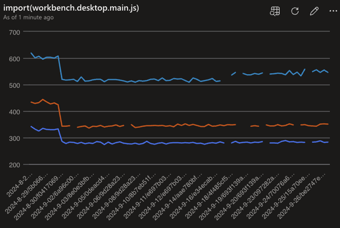
ESM への完全な移行が完了したため、VS Code のエンジニアリング システムを改善する予定です。ESM を使用すると、多くの最新ツールが私たちのために機能し、近い将来に関する詳細を共有できることを非常に楽しみにしています。
注: 拡張機能はこの変更の影響を受けず、ESM 経由で読み込まれることはありません。詳細については、vscode#130367 を参照してください。
デフォルトのパッケージ マネージャーとして NPM を使用する¶
2024 年 9 月の初めに、microsoft/vscode リポジトリのパッケージ管理に yarn から npm への切り替えを完了しました。この決定は、VS Code の特定の要件に基づいており、次の基準を中心にしています:
- パフォーマンス: 最初はパフォーマンスの理由で yarn に移行しましたが、npm も要件を満たすことができます
- セキュリティ: 露出を制限し、依存するツールの数を減らすことで、サプライ チェーンをより安全にします
注目の修正¶
- 226401 fileWatcher が CPU を 200% 以上消費し続ける
- 10054 [WSL]:
localhostForwarding = falseの場合、ポート タブが WSL 内のポートがローカルに転送されていると誤って報告する
ありがとう¶
最後になりましたが、VS Code の貢献者の皆様に心からの感謝を申し上げます。
問題追跡¶
問題追跡への貢献:
プルリクエスト¶
vscode への貢献:
- @BABA983 (BABA)
- ターミナル タブの選択が正しく機能しない問題を修正 PR #224394
- インポート アクションの折りたたみを登録する PR #227216
- @BlackHole1 (Kevin Cui): ci: リトライ ロジックの一貫性を確保する PR #226038
- @Cecil0o0 (hj): chore: 拡張機能をビルドする際に到達できない無視項目を削除します。 PR #227906
- @dangerman (Anees Ahee): 画像プレビューの透明グリッドのスケーリングを修正 PR #226505
- @g-cappai (Gianluca Cappai): Markdown プレビューで HTML アンカー リンクを開く PR #228633
- @gabritto (Gabriela Araujo Britto): [typescript-language-features] 展開可能なホバー PR #228255
- @gjsjohnmurray (John Murray)
- プレビュー エディター タブのホバーにアクションを追加する PR #226023
- ワークスペース拡張機能のアクティベーション失敗メッセージのタイプミスを修正 PR #227348
- ステータス バーのデバッグ パネルのツールチップの大文字を修正 (fix #228088) PR #228089
- @henricryden: check-requirements-linux.sh で libc.so.6 の追加の検索パス PR #227713
- @janssen-tiobe (janssen): 修正: 問題パネルのテーブル ビューでの URI エンコードの過剰 PR #224841
- @jeanp413 (Jean Pierre): 初期ターミナルの寸法がリロード時に正しくない問題を修正 PR #225554
- @jjaeggli (Jacob Jaeggli): ctrl+alt+space で提案の詳細にフォーカスすることを文書化する PR #190096
- @juliapz (Julia Pozdeeva): AUX ウィンドウで検索ウィジェットが切り取られないようにする PR #229001
- @marrej (Marcus Revaj): # リファクター プレビューでファイルの作成をレンダリングする PR #226950
- @nojaf (Florian Verdonck)
- ノートブックをシリアル化するためのワーカーを使用する PR #226632
- ErrorNoTelemetry メッセージに id を含める PR #226715
- @PhantomPower82: はじめにページを磨く (fix #226991) PR #226994
- @rafamerlin (Rafael Merlin): インレイ ヒントの長さを構成可能にする PR #221276
- @rehmsen (Ole)
setupでテスト変数を初期化して順序依存性を回避します。 PR #226596- ノートブック セルごとに複数のコメント ウィジェットをサポートします。 PR #226770
- @remcohaszing (Remco Haszing): .gitignore に test-results.xml を追加する PR #214238
- @repraze (Thomas Dubosc): 修正: browser/hover.css で end を flex-end に置き換える PR #224102
- @segevfiner (Segev Finer): カスタム テキスト エディターの拡張ホストの再起動を採用する PR #225985
- @SimonSiefke (Simon Siefke): 修正: デバッグ ビューのメモリ リーク PR #225334
- @sunnylost (sunnylost): 拡張機能: テーブル セルの内容を段落要素でラップする PR #228365
- @tisilent (xiejialong): エディターの GPU レンダリング フォールバックを追加する PR #228414
- @tmm1 (Aman Karmani): macOS で createDirectoryWatcher(~/Library) の tsserver リクエストを無視する PR #227653
vscode-docs への貢献:
- @0dinD (Odin Dahlström): サポートされている Java バージョンを更新する PR #7561
- @alexwkleung (Alex Leung): Jupyter サーバー URL の入力スクリーンショットを更新する PR #7584
- @DiskCrasher (Mike): コードの欠落している "!" を修正しました PR #7595
- @gaganshera (Gaganjot Singh): prompt-crafting.md を更新する PR #7555
- @harish-s-developer (Harish Srinivasan): 新しい依存関係の管理セクションを追加し、1 つのタイプミスを修正しました PR #7617
- @harrydowning (Harry Downing): プレリリース タグに関する誤った記述を削除する PR #7593
- @listsarah (Sarah Listzwan): Issue #7536 を閉じるために: 「埋め込みプログラミング言語」を更新する PR #7539
- @mistymadonna (Misty Hays): Azure 拡張機能のホームページを更新し、新しいはじめにページを作成しました PR #7520
- @muzimuzhi (Yukai Chou): タイプミス、欠落しているインライン コード マークアップを追加する PR #7589
- @partev: URL リダイレクトを修正する PR #7608
- @Sarke (Peter Stalman): もう 1 つの Flatpak/KDE5 ウォレットの回避策 PR #7606
- @seaniyer (Sean): publishing-extension.md を更新する PR #7540
- @vinistock (Vinicius Stock): Ruby リンクを新しいドキュメントにポイントするように更新する PR #7607
- @wjandrea (William Andrea)
- tasks.md:
problemMatcherプロパティにsourceを追加する PR #7493 - tasks.md:
problemMatcher.severityに言及する PR #7494
vscode-extension-samples への貢献:
- @liu3hao (Weihao): 欠落しているアクティベーション イベントを追加する PR #1057
vscode-js-debug への貢献:
- @lucacasonato (Luca Casonato): 修正: Deno で NODE_OPTIONS を挿入しない PR #2080
vscode-jupyter への貢献:
- @rchiodo (Rich Chiodo): display_name の変更もカーネル変更イベントを引き起こすようにする PR #15967
vscode-languageserver-node への貢献:
- @StellaHuang95 (Stella):
CodeActionにllmGeneratedプロパティをサポートする PR #1557
vscode-pull-request-github への貢献:
vscode-python-debugger への貢献:
- @rchiodo (Rich Chiodo): 最新の出荷バージョンに debugpy 情報を更新する PR #462
vscode-vsce への貢献:
- @mlasson (Marc Lasson): オプションのヒントのタイプミスを修正する PR #1046
vscode-wasm への貢献:
- @mlugg (Matthew Lugg): ストリームのバグを修正する PR #196
language-server-protocol への貢献:
- @aschaber1 (Alexander Schaber): chore:
kubernetsからkubernetesへのタイプミスを修正する PR #2013 - @dawedawe (dawe): CompletionParams のドキュメントのタイプミスを修正する PR #2019
- @didrikmunther (Didrik Munther): pullDiagnostics.md のスペルミスを修正する PR #2022
- @InSyncWithFoo (InSync)
percentageのドキュメント コメントのいくつかのタイプミスを修正する PR #2010- Taplo を実装者リストに追加する PR #2021
- @SamB (Samuel Bronson): servers.md を更新: vscode-markdown-languageserver が移動しました PR #2012
- @sh-cho (Seonghyeon Cho): fluent-bit 言語サーバーの実装を追加する PR #2016
- @StellaHuang95 (Stella):
CodeActionにllmGeneratedプロパティをサポートする PR #2020